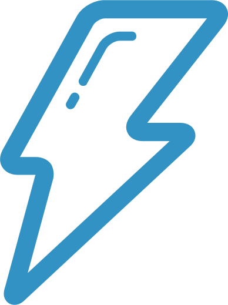

Hello, I’m Tyler Pearson and I’m a web developer (and occasional designer) living in beautiful San Francisco, California. I like code, design, startups, and Taco Tuesday.
 About me
Nunc placerat dapibus integer. Nec cursus tempor et porttitor tincidunt aenean mattis tempor nisi quis. Placerat nisi! Dictumst aenean magna a! Et adipiscing augue dis aliquet adipiscing a, duis ultricies dignissim facilisis non magna aenean, amet, sagittis urna vel a.
Porta est, nascetur arcu pulvinar natoque turpis mid velit cum? Arcu elit amet lacus, ac urna, montes magnis ultricies enim!
Where I've Worked
Nunc placerat dapibus integer. Nec cursus tempor et porttitor tincidunt aenean mattis tempor nisi quis. Placerat nisi! Dictumst aenean magna a! Et adipiscing augue dis aliquet adipiscing a, duis ultricies dignissim facilisis non magna aenean, amet, sagittis urna vel a.
Porta est, nascetur arcu pulvinar natoque turpis mid velit cum? Arcu elit amet lacus, ac urna, montes magnis ultricies enim!
Projects
Nunc placerat dapibus integer. Nec cursus tempor et porttitor tincidunt aenean mattis tempor nisi quis. Placerat nisi! Dictumst aenean magna a! Et adipiscing augue dis aliquet adipiscing a, duis ultricies dignissim facilisis non magna aenean, amet, sagittis urna vel a.
Porta est, nascetur arcu pulvinar natoque turpis mid velit cum? Arcu elit amet lacus, ac urna, montes magnis ultricies enim!
Open Source
I try to push as much code as I can to Github in the hope that someone else will find it useful. Here are some of the projects currently up there: